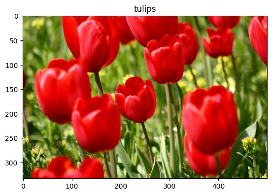
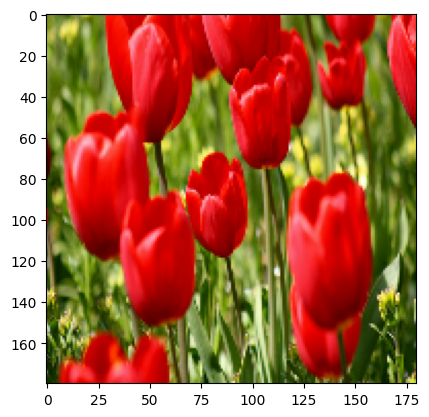
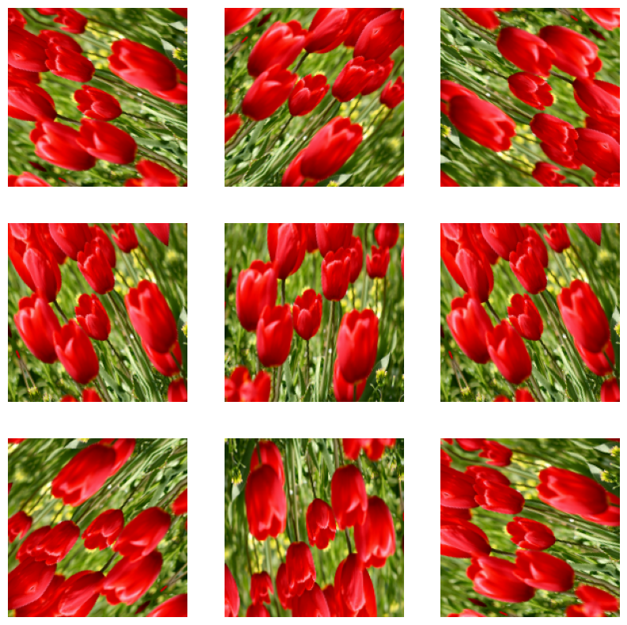
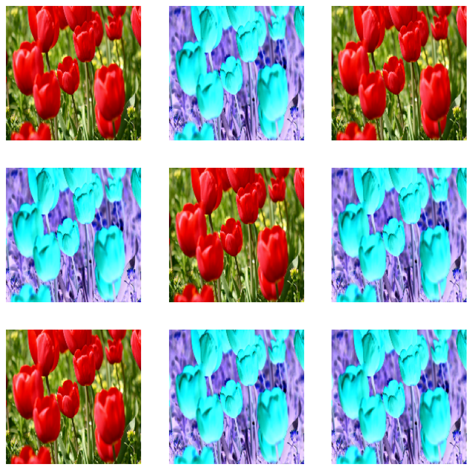
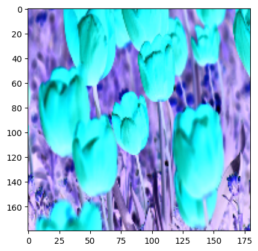

import matplotlib.pyplot as plt
import numpy as np
import tensorflow as tf
import tensorflow_datasets as tfdsIntroducción al aumento de datos y optimización de modelos

Resúmen
Este práctica toca los temas de
- Aumento de datos en problemás de imágenes
Una técnica para incrementar la diversidad del dataset de entrenamiento aplicando aleatorias pero transformaciones realistas como rotación de imágenes.
Se revisarán el aumento de datos:
- Usando las capas de pre-procesamiento como
tf.keras.layers.Resizing,tf.keras.layers.Rescaling,tf.keras.layers.RandomFlip, ytf.keras.layers.RandomRotation.
- Optimización de modelos usando Optuna.
Optuna es una herramienta que permite la optimización hiperparamétrica de modelos usando inferencia Bayesiana.
Setup
Descargar el dataset
Se descargarán los datos tf_flowers. Para conveniencia, descargar el dataset usando TensorFlow Datasets.
(train_ds, val_ds, test_ds), metadata = tfds.load(
'tf_flowers',
split=['train[:80%]', 'train[80%:90%]', 'train[90%:]'],
with_info=True,
as_supervised=True,
)Nuestro conjunto de entrenamiento tiene diferente tamaño para sus imagenes
for image, label in train_ds.take(5):
print(image.shape)(333, 500, 3)
(212, 320, 3)
(240, 320, 3)
(240, 320, 3)
(317, 500, 3)El dataset tiene 5 clases
num_classes = metadata.features['label'].num_classes
print(num_classes)5Como ejemplo se usará una imágen del dataset para demostrar el aumento de datos
get_label_name = metadata.features['label'].int2str
image, label = next(iter(train_ds))
_ = plt.imshow(image)
_ = plt.title(get_label_name(label))
Capas de pre-procesamiento de Keras
Redimensionado y re-escalado
Es posible usar las capas de pre-procesamiento de keras para redimensionar las imágenes (con tf.keras.layers.Resizing), y para re-escalar los valores de los pixeles (con tf.keras.layers.Rescaling).
IMG_SIZE = 180
resize_and_rescale = tf.keras.Sequential([
tf.keras.layers.Resizing(IMG_SIZE, IMG_SIZE),
# tf.keras.layers.Rescaling(1./255) # actívalo si lo necesitas
], name="preproc")Nota: El reescalado anterior re-escala las imágenes a el rango: [0, 1].
Visualización para apreciar los resultados
result = resize_and_rescale(image)
_ = plt.imshow(result.numpy().astype("uint8"))
print("Valores min y max de los pixeles:", result.numpy().min(), result.numpy().max())Valores min y max de los pixeles: 0.0 255.0Aumento de datos
Hay otras capas de pre-procesamiento de keras que pueden ser usadas para aumentar datos, por ejemplo: tf.keras.layers.RandomFlip y tf.keras.layers.RandomRotation.
Vamos a aplicar algunas capas para aplicarlas repetidamente a la misma imágen.
data_augmentation = tf.keras.Sequential([
tf.keras.layers.RandomFlip("horizontal_and_vertical"),
tf.keras.layers.RandomRotation(0.2),
], name="augmento")# Adiccionamos la imágen a un batch
image = tf.cast(tf.expand_dims(result, 0), tf.float32)image.shapeTensorShape([1, 180, 180, 3])plt.figure(figsize=(10, 10))
for i in range(9):
augmented_image = data_augmentation(image)
ax = plt.subplot(3, 3, i + 1)
plt.imshow(augmented_image[0].numpy().astype("uint8"))
plt.axis("off")
Hay una variedad de capas de pre-procesamiento para aumento de datos incluyendo tf.keras.layers.RandomContrast, tf.keras.layers.RandomCrop, tf.keras.layers.RandomZoom, y otras. Ver más en https://www.tensorflow.org/guide/keras/preprocessing_layers
Dos opciones para usar las capas de pre-procesamiento de keras
Hay dos opciones para usar las capas de pre-procesamiento de keras cada una con sus ventajas y desventajas.
Opción 1: Incorporar las capas de pre-procesamiento como parte del modelo.
# Hay que definir nuevamente porque las versiones anteriores ya se crearon con
# la dimensión fija de las imágenes al momento de realizar el ejemplo
resize_and_rescale_v2 = tf.keras.Sequential([
tf.keras.layers.Resizing(IMG_SIZE, IMG_SIZE),
# tf.keras.layers.Rescaling(1./255) # actívalo si lo necesitas
], name="preproc")
data_augmentation_v2 = tf.keras.Sequential([
tf.keras.layers.RandomFlip("horizontal_and_vertical"),
tf.keras.layers.RandomRotation(0.2),
], name="augmento")# Vamos a usar el API funcional pero también se puede con el API Secuencial
inputs = tf.keras.Input(shape=(None, None, 3))
x = resize_and_rescale_v2(inputs)
x = data_augmentation_v2(x)
x = tf.keras.layers.Conv2D(16, 3, padding='same', activation='relu')(x)
x = tf.keras.layers.MaxPooling2D()(x)
x = tf.keras.layers.Flatten()(x)
outputs = tf.keras.layers.Dense(num_classes, activation='softmax')(x)
model_1 = tf.keras.Model(inputs, outputs)Hay dos importantes puntos en este caso:
El aumento de datos correrá paralelamente con los otras partes del modelo beneficiandose del uso de la GPU, esto añade claramente más pasos a la hora de entrenamiento.
Cuando se exporte el modelo usando
model.save, las capas de pre-procesamiento se almacenarán con el resto del modelo. Si usted despliega este modelo, las imágenes se estandarizaran automaticamente (acorde a como lo definen las capas). Esto puede beneficiar si no se quiere implementar una lógica aparte en el server para pre-procesar las entradas.
Nota: Aumento de datos esta inactivo en test por lo que solo se llamará cuando se haga Model.fit (no Model.evaluate o Model.predict).
| Tipo de capa | Ejemplos | Comportamiento |
|---|---|---|
| Determinísticas (no aleatorias) | Resizing, Rescaling, CenterCrop, Normalization |
Aplican siempre, tanto en entrenamiento como en inferencia. No dependen de training=True/False. |
| Estocásticas (aleatorias) | RandomFlip, RandomRotation, RandomZoom, RandomContrast |
Solo aplican su aleatoriedad en entrenamiento (training=True). En inferencia reproducen la identidad (devuelven la imagen igual). |
Ejemplo: aplicando las capas de pre-procesamiento en el modelo.
model_1.compile(optimizer='adam',
loss=tf.keras.losses.SparseCategoricalCrossentropy(from_logits=False),
metrics=['accuracy'])BATCH_SIZE = 32
AUTOTUNE = tf.data.AUTOTUNE
def to_float(image, label):
# Las capas de Keras aceptan uint8, pero float32 es estándar.
return tf.cast(image, tf.float32), label
def prepare(ds, shuffle=False):
if shuffle:
ds = ds.shuffle(1000)
ds = ds.map(to_float, num_parallel_calls=AUTOTUNE)
# Clave: permitir HxW variables con padded_batch
ds = ds.padded_batch(
BATCH_SIZE,
padded_shapes=([None, None, 3], []) # imagen y etiqueta
)
return ds.prefetch(AUTOTUNE)train_ds_1 = prepare(train_ds, shuffle=True)
val_ds_1 = prepare(val_ds)
test_ds_1 = prepare(test_ds)# entrenar para algunas epocas
epochs=5
history = model_1.fit(
train_ds_1,
validation_data=val_ds_1,
epochs=epochs
)Epoch 1/5 92/92 ━━━━━━━━━━━━━━━━━━━━ 16s 117ms/step - accuracy: 0.2874 - loss: 737.2949 - val_accuracy: 0.3815 - val_loss: 29.3050 Epoch 2/5 92/92 ━━━━━━━━━━━━━━━━━━━━ 12s 75ms/step - accuracy: 0.3854 - loss: 22.5133 - val_accuracy: 0.3542 - val_loss: 11.7531 Epoch 3/5 92/92 ━━━━━━━━━━━━━━━━━━━━ 8s 85ms/step - accuracy: 0.3906 - loss: 8.7548 - val_accuracy: 0.3951 - val_loss: 7.5477 Epoch 4/5 92/92 ━━━━━━━━━━━━━━━━━━━━ 7s 76ms/step - accuracy: 0.3753 - loss: 5.2572 - val_accuracy: 0.3815 - val_loss: 5.9367 Epoch 5/5 92/92 ━━━━━━━━━━━━━━━━━━━━ 8s 83ms/step - accuracy: 0.3744 - loss: 3.9919 - val_accuracy: 0.3678 - val_loss: 4.5121
loss, acc = model_1.evaluate(test_ds_1)
print("Accuracy", acc)12/12 ━━━━━━━━━━━━━━━━━━━━ 1s 82ms/step - accuracy: 0.3950 - loss: 4.5999 Accuracy 0.3978201746940613
Opción 2: Aplicar las capas de pre-procesamiento al dataset
aug_ds = train_ds.map(
lambda x, y: (resize_and_rescale(x, training=True), y))Este enfoque usa Dataset.map para crear batches de imágenes augmentadas. En este caso:
- El augmento de datos ocurrirá de manera asincróna en la CPU, y es posible sobrelapar el entrenamiento del modelo (usando GPU) con el pre-procesamiento de los datos en CPU.
- En este caso las capas no se exportan con el modelo así que hay que exportarlas o implementar en el server.
Ejemplo: aplicando las capas de pre-procesamiento al dataset
Configura los conjuntos de datos de entrenamiento, validación y prueba utilizando las capas de preprocesamiento de Keras que creaste anteriormente. Además, optimiza el rendimiento de los conjuntos de datos empleando lecturas en paralelo y buffered prefetching, para obtener lotes desde el disco sin que las operaciones de entrada/salida (I/O) se conviertan en un cuello de botella. (Puedes obtener más información sobre cómo mejorar el rendimiento en la guía Mejor rendimiento con la API tf.data).
Nota: El aumento de datos solo se aplica al entrenamiento
batch_size = 32
AUTOTUNE = tf.data.AUTOTUNE
def prepare(ds, shuffle=False, augment=False):
# Redimensionar y reescalar todo el dataset
ds = ds.map(lambda x, y: (resize_and_rescale(x), y),
num_parallel_calls=AUTOTUNE)
# mezclar las muestras
if shuffle:
ds = ds.shuffle(1000)
# Crear los batches
ds = ds.batch(batch_size)
# Usar aumento de datos solo al conjunto de entrenamiento
if augment:
ds = ds.map(lambda x, y: (data_augmentation(x, training=True), y),
num_parallel_calls=AUTOTUNE)
# Optimizar el buffer para todo el dataset
return ds.prefetch(buffer_size=AUTOTUNE)train_ds_2 = prepare(train_ds, shuffle=True, augment=True)
val_ds_2 = prepare(val_ds)
test_ds_2 = prepare(test_ds)# revisar algunas muestras de train
image_batch, label_batch = next(iter(train_ds_2))
plt.figure(figsize=(10, 10))
for i in range(9):
ax = plt.subplot(3, 3, i + 1)
plt.imshow(image_batch[i].numpy().astype("uint8"))
plt.axis("off")Entrenar el modelo
Para terminar entrenar el modelo usando los datasets:
# usando el API Secuencial, puede ser también el funcional
model_2 = tf.keras.Sequential([
tf.keras.layers.Conv2D(16, 3, padding='same', activation='relu'),
tf.keras.layers.MaxPooling2D(),
tf.keras.layers.Conv2D(32, 3, padding='same', activation='relu'),
tf.keras.layers.MaxPooling2D(),
tf.keras.layers.Conv2D(64, 3, padding='same', activation='relu'),
tf.keras.layers.MaxPooling2D(),
tf.keras.layers.Flatten(),
tf.keras.layers.Dense(128, activation='relu'),
tf.keras.layers.Dense(num_classes)
])model_2.compile(optimizer='adam',
loss=tf.keras.losses.SparseCategoricalCrossentropy(from_logits=True),
metrics=['accuracy'])# entrenar para algunas epocas
epochs=5
history = model_2.fit(
train_ds_2,
validation_data=val_ds_2,
epochs=epochs
)Epoch 1/5 92/92 ━━━━━━━━━━━━━━━━━━━━ 21s 174ms/step - accuracy: 0.2671 - loss: 113.0121 - val_accuracy: 0.3270 - val_loss: 1.6736 Epoch 2/5 92/92 ━━━━━━━━━━━━━━━━━━━━ 14s 134ms/step - accuracy: 0.4264 - loss: 1.3940 - val_accuracy: 0.3542 - val_loss: 1.6405 Epoch 3/5 92/92 ━━━━━━━━━━━━━━━━━━━━ 21s 136ms/step - accuracy: 0.3603 - loss: 1.4973 - val_accuracy: 0.3597 - val_loss: 1.5463 Epoch 4/5 92/92 ━━━━━━━━━━━━━━━━━━━━ 13s 133ms/step - accuracy: 0.3850 - loss: 1.4291 - val_accuracy: 0.3842 - val_loss: 1.5115 Epoch 5/5 92/92 ━━━━━━━━━━━━━━━━━━━━ 14s 145ms/step - accuracy: 0.3930 - loss: 1.3998 - val_accuracy: 0.3597 - val_loss: 1.4502
loss, acc = model_2.evaluate(test_ds_2)
print("Accuracy", acc)12/12 ━━━━━━━━━━━━━━━━━━━━ 0s 12ms/step - accuracy: 0.4186 - loss: 1.4236 Accuracy 0.40326976776123047
Aumento de datos personalizado
Para crear capas personalizadas de aumento de datos en caso de que no esten implementadas.
Dos pasos para hacerlo:
- Primer, crear una capa
tf.keras.layers.Lambda. Recomendado. - Luego, escribir una nueva capa via subclassing, lo cual ya es sabido que proporciona más control.
Ejemplo invirtiendo los colores de una imágen aleatoriamente.
def random_invert_img(x, p=0.5):
if tf.random.uniform([]) < p:
x = (255-x)
else:
x
return xdef random_invert(factor=0.5):
return tf.keras.layers.Lambda(lambda x: random_invert_img(x, factor))
random_invert = random_invert()plt.figure(figsize=(10, 10))
for i in range(9):
augmented_image = random_invert(image)
ax = plt.subplot(3, 3, i + 1)
plt.imshow(augmented_image[0].numpy().astype("uint8"))
plt.axis("off")
Implementar una capa custom usando subclassing:
class RandomInvert(tf.keras.layers.Layer):
def __init__(self, factor=0.5, **kwargs):
super().__init__(**kwargs)
self.factor = factor
def call(self, x):
return random_invert_img(x)_ = plt.imshow(RandomInvert()(image)[0].numpy().astype("uint8"))
Estas capas pueden ser usadas en las opciones 1 y 2 vistas anteriormente.
Optimización de hiperparámetros usando Optuna
!pip install optuna
!pip install optuna-integration[tfkeras]
import optuna
from optuna.integration import TFKerasPruningCallback
from optuna.trial import TrialState
from optuna.visualization import plot_intermediate_values
from optuna.visualization import plot_optimization_history
from optuna.visualization import plot_param_importances
from optuna.visualization import plot_contourRequirement already satisfied: optuna in /usr/local/lib/python3.11/dist-packages (4.4.0) Requirement already satisfied: alembic>=1.5.0 in /usr/local/lib/python3.11/dist-packages (from optuna) (1.16.4) Requirement already satisfied: colorlog in /usr/local/lib/python3.11/dist-packages (from optuna) (6.9.0) Requirement already satisfied: numpy in /usr/local/lib/python3.11/dist-packages (from optuna) (2.0.2) Requirement already satisfied: packaging>=20.0 in /usr/local/lib/python3.11/dist-packages (from optuna) (25.0) Requirement already satisfied: sqlalchemy>=1.4.2 in /usr/local/lib/python3.11/dist-packages (from optuna) (2.0.42) Requirement already satisfied: tqdm in /usr/local/lib/python3.11/dist-packages (from optuna) (4.67.1) Requirement already satisfied: PyYAML in /usr/local/lib/python3.11/dist-packages (from optuna) (6.0.2) Requirement already satisfied: Mako in /usr/lib/python3/dist-packages (from alembic>=1.5.0->optuna) (1.1.3) Requirement already satisfied: typing-extensions>=4.12 in /usr/local/lib/python3.11/dist-packages (from alembic>=1.5.0->optuna) (4.14.1) Requirement already satisfied: greenlet>=1 in /usr/local/lib/python3.11/dist-packages (from sqlalchemy>=1.4.2->optuna) (3.2.3) Collecting optuna-integration[tfkeras] Downloading optuna_integration-4.4.0-py3-none-any.whl.metadata (12 kB) Requirement already satisfied: optuna in /usr/local/lib/python3.11/dist-packages (from optuna-integration[tfkeras]) (4.4.0) Requirement already satisfied: tensorflow in /usr/local/lib/python3.11/dist-packages (from optuna-integration[tfkeras]) (2.19.0) Requirement already satisfied: alembic>=1.5.0 in /usr/local/lib/python3.11/dist-packages (from optuna->optuna-integration[tfkeras]) (1.16.4) Requirement already satisfied: colorlog in /usr/local/lib/python3.11/dist-packages (from optuna->optuna-integration[tfkeras]) (6.9.0) Requirement already satisfied: numpy in /usr/local/lib/python3.11/dist-packages (from optuna->optuna-integration[tfkeras]) (2.0.2) Requirement already satisfied: packaging>=20.0 in /usr/local/lib/python3.11/dist-packages (from optuna->optuna-integration[tfkeras]) (25.0) Requirement already satisfied: sqlalchemy>=1.4.2 in /usr/local/lib/python3.11/dist-packages (from optuna->optuna-integration[tfkeras]) (2.0.42) Requirement already satisfied: tqdm in /usr/local/lib/python3.11/dist-packages (from optuna->optuna-integration[tfkeras]) (4.67.1) Requirement already satisfied: PyYAML in /usr/local/lib/python3.11/dist-packages (from optuna->optuna-integration[tfkeras]) (6.0.2) Requirement already satisfied: absl-py>=1.0.0 in /usr/local/lib/python3.11/dist-packages (from tensorflow->optuna-integration[tfkeras]) (1.4.0) Requirement already satisfied: astunparse>=1.6.0 in /usr/local/lib/python3.11/dist-packages (from tensorflow->optuna-integration[tfkeras]) (1.6.3) Requirement already satisfied: flatbuffers>=24.3.25 in /usr/local/lib/python3.11/dist-packages (from tensorflow->optuna-integration[tfkeras]) (25.2.10) Requirement already satisfied: gast!=0.5.0,!=0.5.1,!=0.5.2,>=0.2.1 in /usr/local/lib/python3.11/dist-packages (from tensorflow->optuna-integration[tfkeras]) (0.6.0) Requirement already satisfied: google-pasta>=0.1.1 in /usr/local/lib/python3.11/dist-packages (from tensorflow->optuna-integration[tfkeras]) (0.2.0) Requirement already satisfied: libclang>=13.0.0 in /usr/local/lib/python3.11/dist-packages (from tensorflow->optuna-integration[tfkeras]) (18.1.1) Requirement already satisfied: opt-einsum>=2.3.2 in /usr/local/lib/python3.11/dist-packages (from tensorflow->optuna-integration[tfkeras]) (3.4.0) Requirement already satisfied: protobuf!=4.21.0,!=4.21.1,!=4.21.2,!=4.21.3,!=4.21.4,!=4.21.5,<6.0.0dev,>=3.20.3 in /usr/local/lib/python3.11/dist-packages (from tensorflow->optuna-integration[tfkeras]) (5.29.5) Requirement already satisfied: requests<3,>=2.21.0 in /usr/local/lib/python3.11/dist-packages (from tensorflow->optuna-integration[tfkeras]) (2.32.3) Requirement already satisfied: setuptools in /usr/local/lib/python3.11/dist-packages (from tensorflow->optuna-integration[tfkeras]) (75.2.0) Requirement already satisfied: six>=1.12.0 in /usr/local/lib/python3.11/dist-packages (from tensorflow->optuna-integration[tfkeras]) (1.17.0) Requirement already satisfied: termcolor>=1.1.0 in /usr/local/lib/python3.11/dist-packages (from tensorflow->optuna-integration[tfkeras]) (3.1.0) Requirement already satisfied: typing-extensions>=3.6.6 in /usr/local/lib/python3.11/dist-packages (from tensorflow->optuna-integration[tfkeras]) (4.14.1) Requirement already satisfied: wrapt>=1.11.0 in /usr/local/lib/python3.11/dist-packages (from tensorflow->optuna-integration[tfkeras]) (1.17.2) Requirement already satisfied: grpcio<2.0,>=1.24.3 in /usr/local/lib/python3.11/dist-packages (from tensorflow->optuna-integration[tfkeras]) (1.74.0) Requirement already satisfied: tensorboard~=2.19.0 in /usr/local/lib/python3.11/dist-packages (from tensorflow->optuna-integration[tfkeras]) (2.19.0) Requirement already satisfied: keras>=3.5.0 in /usr/local/lib/python3.11/dist-packages (from tensorflow->optuna-integration[tfkeras]) (3.10.0) Requirement already satisfied: h5py>=3.11.0 in /usr/local/lib/python3.11/dist-packages (from tensorflow->optuna-integration[tfkeras]) (3.14.0) Requirement already satisfied: ml-dtypes<1.0.0,>=0.5.1 in /usr/local/lib/python3.11/dist-packages (from tensorflow->optuna-integration[tfkeras]) (0.5.3) Requirement already satisfied: tensorflow-io-gcs-filesystem>=0.23.1 in /usr/local/lib/python3.11/dist-packages (from tensorflow->optuna-integration[tfkeras]) (0.37.1) Requirement already satisfied: Mako in /usr/lib/python3/dist-packages (from alembic>=1.5.0->optuna->optuna-integration[tfkeras]) (1.1.3) Requirement already satisfied: wheel<1.0,>=0.23.0 in /usr/local/lib/python3.11/dist-packages (from astunparse>=1.6.0->tensorflow->optuna-integration[tfkeras]) (0.45.1) Requirement already satisfied: rich in /usr/local/lib/python3.11/dist-packages (from keras>=3.5.0->tensorflow->optuna-integration[tfkeras]) (13.9.4) Requirement already satisfied: namex in /usr/local/lib/python3.11/dist-packages (from keras>=3.5.0->tensorflow->optuna-integration[tfkeras]) (0.1.0) Requirement already satisfied: optree in /usr/local/lib/python3.11/dist-packages (from keras>=3.5.0->tensorflow->optuna-integration[tfkeras]) (0.17.0) Requirement already satisfied: charset-normalizer<4,>=2 in /usr/local/lib/python3.11/dist-packages (from requests<3,>=2.21.0->tensorflow->optuna-integration[tfkeras]) (3.4.2) Requirement already satisfied: idna<4,>=2.5 in /usr/local/lib/python3.11/dist-packages (from requests<3,>=2.21.0->tensorflow->optuna-integration[tfkeras]) (3.10) Requirement already satisfied: urllib3<3,>=1.21.1 in /usr/local/lib/python3.11/dist-packages (from requests<3,>=2.21.0->tensorflow->optuna-integration[tfkeras]) (2.5.0) Requirement already satisfied: certifi>=2017.4.17 in /usr/local/lib/python3.11/dist-packages (from requests<3,>=2.21.0->tensorflow->optuna-integration[tfkeras]) (2025.8.3) Requirement already satisfied: greenlet>=1 in /usr/local/lib/python3.11/dist-packages (from sqlalchemy>=1.4.2->optuna->optuna-integration[tfkeras]) (3.2.3) Requirement already satisfied: markdown>=2.6.8 in /usr/local/lib/python3.11/dist-packages (from tensorboard~=2.19.0->tensorflow->optuna-integration[tfkeras]) (3.8.2) Requirement already satisfied: tensorboard-data-server<0.8.0,>=0.7.0 in /usr/local/lib/python3.11/dist-packages (from tensorboard~=2.19.0->tensorflow->optuna-integration[tfkeras]) (0.7.2) Requirement already satisfied: werkzeug>=1.0.1 in /usr/local/lib/python3.11/dist-packages (from tensorboard~=2.19.0->tensorflow->optuna-integration[tfkeras]) (3.1.3) Requirement already satisfied: MarkupSafe>=2.1.1 in /usr/local/lib/python3.11/dist-packages (from werkzeug>=1.0.1->tensorboard~=2.19.0->tensorflow->optuna-integration[tfkeras]) (3.0.2) Requirement already satisfied: markdown-it-py>=2.2.0 in /usr/local/lib/python3.11/dist-packages (from rich->keras>=3.5.0->tensorflow->optuna-integration[tfkeras]) (3.0.0) Requirement already satisfied: pygments<3.0.0,>=2.13.0 in /usr/local/lib/python3.11/dist-packages (from rich->keras>=3.5.0->tensorflow->optuna-integration[tfkeras]) (2.19.2) Requirement already satisfied: mdurl~=0.1 in /usr/local/lib/python3.11/dist-packages (from markdown-it-py>=2.2.0->rich->keras>=3.5.0->tensorflow->optuna-integration[tfkeras]) (0.1.2) Downloading optuna_integration-4.4.0-py3-none-any.whl (98 kB) ━━━━━━━━━━━━━━━━━━━━━━━━━━━━━━━━━━━━━━━━ 98.9/98.9 kB 4.8 MB/s eta 0:00:00 Installing collected packages: optuna-integration Successfully installed optuna-integration-4.4.0
- Crear el modelo con las opciones de optuna
def create_model(trial):
# creamos los valores sugeridos para cada hp que se desea evaluar
n_layers = trial.suggest_int('n_layers', 1, 3)
dropout_rate = trial.suggest_float("dropout", 0.0, 0.3)
activation = trial.suggest_categorical("activation", ["relu", "tanh"])
model = tf.keras.Sequential()
for i in range(n_layers):
num_filters = trial.suggest_int(f'n_filters_l{i}', 32, 64, log=True)
model.add(tf.keras.layers.Conv2D(num_filters, 3, activation=activation))
model.add(tf.keras.layers.MaxPooling2D())
model.add(tf.keras.layers.Flatten())
model.add(tf.keras.layers.Dense(128, activation='relu'))
model.add(tf.keras.layers.Dropout(dropout_rate))
model.add(tf.keras.layers.Dense(num_classes, activation='softmax'))
model.compile(optimizer='adam',
loss=tf.keras.losses.SparseCategoricalCrossentropy(from_logits=False),
metrics=['accuracy'])
return model- Ahora definir una función objetivo a ser maximizada
EPOCHS = 5 # Número de epocas para cada trial
def objective(trial):
# Limpiar cada grafo
tf.keras.backend.clear_session()
model = create_model(trial)
# Entrenar el modelo y validarlo
model.fit(
train_ds_2,
callbacks=[TFKerasPruningCallback(trial, "val_accuracy")],
epochs=EPOCHS,
validation_data=val_ds_2,
verbose=1,
)
# evaluar el modelo en test
score = model.evaluate(test_ds_2, verbose=0)
return score[1]- Instanciar y hacer la optimización
study = optuna.create_study(direction='maximize',
sampler=optuna.samplers.TPESampler(), pruner=optuna.pruners.HyperbandPruner())
study.optimize(objective, n_trials=20)
pruned_trials = study.get_trials(deepcopy=False, states=[TrialState.PRUNED])
complete_trials = study.get_trials(deepcopy=False, states=[TrialState.COMPLETE])[I 2025-08-11 14:21:34,560] A new study created in memory with name: no-name-2fa5eeb1-4d2b-493a-bb10-b101b6a03d88Epoch 1/5 92/92 ━━━━━━━━━━━━━━━━━━━━ 20s 169ms/step - accuracy: 0.3103 - loss: 1024.8566 - val_accuracy: 0.2779 - val_loss: 2.1518 Epoch 2/5 92/92 ━━━━━━━━━━━━━━━━━━━━ 13s 133ms/step - accuracy: 0.2390 - loss: 1.8287 - val_accuracy: 0.2425 - val_loss: 1.7280 Epoch 3/5 92/92 ━━━━━━━━━━━━━━━━━━━━ 13s 132ms/step - accuracy: 0.2537 - loss: 1.6687 - val_accuracy: 0.2616 - val_loss: 1.8796 Epoch 4/5 92/92 ━━━━━━━━━━━━━━━━━━━━ 21s 136ms/step - accuracy: 0.2734 - loss: 1.6455 - val_accuracy: 0.2398 - val_loss: 1.6109 Epoch 5/5 92/92 ━━━━━━━━━━━━━━━━━━━━ 13s 135ms/step - accuracy: 0.2477 - loss: 1.6010 - val_accuracy: 0.2398 - val_loss: 1.6557
[I 2025-08-11 14:23:16,690] Trial 0 finished with value: 0.19073569774627686 and parameters: {'n_layers': 1, 'dropout': 0.16859144182096772, 'activation': 'relu', 'n_filters_l0': 33}. Best is trial 0 with value: 0.19073569774627686.Epoch 1/5 92/92 ━━━━━━━━━━━━━━━━━━━━ 24s 201ms/step - accuracy: 0.2562 - loss: 296.6700 - val_accuracy: 0.3569 - val_loss: 1.5277 Epoch 2/5 92/92 ━━━━━━━━━━━━━━━━━━━━ 32s 138ms/step - accuracy: 0.3992 - loss: 1.4691 - val_accuracy: 0.3706 - val_loss: 1.5133 Epoch 3/5 92/92 ━━━━━━━━━━━━━━━━━━━━ 20s 140ms/step - accuracy: 0.4424 - loss: 1.3652 - val_accuracy: 0.3678 - val_loss: 1.4495 Epoch 4/5 92/92 ━━━━━━━━━━━━━━━━━━━━ 20s 139ms/step - accuracy: 0.4578 - loss: 1.3083 - val_accuracy: 0.4469 - val_loss: 1.3432 Epoch 5/5 92/92 ━━━━━━━━━━━━━━━━━━━━ 21s 138ms/step - accuracy: 0.4557 - loss: 1.3086 - val_accuracy: 0.4578 - val_loss: 1.3263
[I 2025-08-11 14:25:21,886] Trial 1 finished with value: 0.40326976776123047 and parameters: {'n_layers': 2, 'dropout': 0.16115710096047375, 'activation': 'relu', 'n_filters_l0': 41, 'n_filters_l1': 43}. Best is trial 1 with value: 0.40326976776123047.Epoch 1/5 92/92 ━━━━━━━━━━━━━━━━━━━━ 22s 177ms/step - accuracy: 0.2532 - loss: 18.2350 - val_accuracy: 0.2425 - val_loss: 1.6078 Epoch 2/5 92/92 ━━━━━━━━━━━━━━━━━━━━ 13s 139ms/step - accuracy: 0.2642 - loss: 1.6067 - val_accuracy: 0.2425 - val_loss: 1.6046 Epoch 3/5 92/92 ━━━━━━━━━━━━━━━━━━━━ 21s 142ms/step - accuracy: 0.2570 - loss: 1.6041 - val_accuracy: 0.2425 - val_loss: 1.6018 Epoch 4/5 92/92 ━━━━━━━━━━━━━━━━━━━━ 20s 139ms/step - accuracy: 0.2454 - loss: 1.6048 - val_accuracy: 0.2425 - val_loss: 1.5998 Epoch 5/5 92/92 ━━━━━━━━━━━━━━━━━━━━ 13s 139ms/step - accuracy: 0.2564 - loss: 1.6012 - val_accuracy: 0.2425 - val_loss: 1.5981
[I 2025-08-11 14:26:52,435] Trial 2 finished with value: 0.19073569774627686 and parameters: {'n_layers': 2, 'dropout': 0.20937211907599296, 'activation': 'tanh', 'n_filters_l0': 35, 'n_filters_l1': 55}. Best is trial 1 with value: 0.40326976776123047.Epoch 1/5 92/92 ━━━━━━━━━━━━━━━━━━━━ 25s 202ms/step - accuracy: 0.2502 - loss: 45.9957 - val_accuracy: 0.2561 - val_loss: 1.6004 Epoch 2/5 92/92 ━━━━━━━━━━━━━━━━━━━━ 0s 137ms/step - accuracy: 0.2862 - loss: 1.6000
[I 2025-08-11 14:27:31,315] Trial 3 pruned. Trial was pruned at epoch 1.Epoch 1/5 92/92 ━━━━━━━━━━━━━━━━━━━━ 21s 178ms/step - accuracy: 0.2180 - loss: 2721.4155 - val_accuracy: 0.1744 - val_loss: 3.5069 Epoch 2/5 92/92 ━━━━━━━━━━━━━━━━━━━━ 14s 128ms/step - accuracy: 0.2152 - loss: 2.1417 - val_accuracy: 0.2425 - val_loss: 1.6058 Epoch 3/5 92/92 ━━━━━━━━━━━━━━━━━━━━ 12s 127ms/step - accuracy: 0.2406 - loss: 1.6666 - val_accuracy: 0.2425 - val_loss: 1.6031 Epoch 4/5 92/92 ━━━━━━━━━━━━━━━━━━━━ 13s 129ms/step - accuracy: 0.2586 - loss: 1.6143 - val_accuracy: 0.2425 - val_loss: 1.6010 Epoch 5/5 92/92 ━━━━━━━━━━━━━━━━━━━━ 13s 131ms/step - accuracy: 0.2565 - loss: 1.6054 - val_accuracy: 0.2425 - val_loss: 1.5990
[I 2025-08-11 14:28:45,048] Trial 4 finished with value: 0.19073569774627686 and parameters: {'n_layers': 1, 'dropout': 0.11874098770505685, 'activation': 'relu', 'n_filters_l0': 32}. Best is trial 1 with value: 0.40326976776123047.Epoch 1/5 92/92 ━━━━━━━━━━━━━━━━━━━━ 25s 202ms/step - accuracy: 0.2455 - loss: 62.7376 - val_accuracy: 0.2534 - val_loss: 1.5811 Epoch 2/5 92/92 ━━━━━━━━━━━━━━━━━━━━ 0s 138ms/step - accuracy: 0.2904 - loss: 1.5872
[I 2025-08-11 14:29:41,941] Trial 5 pruned. Trial was pruned at epoch 1.Epoch 1/5 92/92 ━━━━━━━━━━━━━━━━━━━━ 26s 202ms/step - accuracy: 0.2809 - loss: 12.5328 - val_accuracy: 0.2507 - val_loss: 1.5977 Epoch 2/5 92/92 ━━━━━━━━━━━━━━━━━━━━ 13s 141ms/step - accuracy: 0.2621 - loss: 1.5902 - val_accuracy: 0.2997 - val_loss: 1.5463 Epoch 3/5 92/92 ━━━━━━━━━━━━━━━━━━━━ 13s 140ms/step - accuracy: 0.2680 - loss: 1.5886 - val_accuracy: 0.2616 - val_loss: 1.5766 Epoch 4/5 92/92 ━━━━━━━━━━━━━━━━━━━━ 14s 140ms/step - accuracy: 0.2938 - loss: 1.5563 - val_accuracy: 0.2752 - val_loss: 1.5263 Epoch 5/5 92/92 ━━━━━━━━━━━━━━━━━━━━ 13s 137ms/step - accuracy: 0.2968 - loss: 1.5329 - val_accuracy: 0.2561 - val_loss: 1.5749
[I 2025-08-11 14:31:02,682] Trial 6 finished with value: 0.19618529081344604 and parameters: {'n_layers': 3, 'dropout': 0.26487988121739164, 'activation': 'relu', 'n_filters_l0': 53, 'n_filters_l1': 41, 'n_filters_l2': 32}. Best is trial 1 with value: 0.40326976776123047.Epoch 1/5 92/92 ━━━━━━━━━━━━━━━━━━━━ 21s 174ms/step - accuracy: 0.2948 - loss: 1855.7390 - val_accuracy: 0.4414 - val_loss: 3.8743 Epoch 2/5 92/92 ━━━━━━━━━━━━━━━━━━━━ 13s 135ms/step - accuracy: 0.3865 - loss: 4.0972 - val_accuracy: 0.4251 - val_loss: 2.5967 Epoch 3/5 92/92 ━━━━━━━━━━━━━━━━━━━━ 13s 138ms/step - accuracy: 0.3883 - loss: 1.8732 - val_accuracy: 0.3896 - val_loss: 1.6159 Epoch 4/5 92/92 ━━━━━━━━━━━━━━━━━━━━ 0s 146ms/step - accuracy: 0.3690 - loss: 1.5267
[I 2025-08-11 14:32:05,096] Trial 7 pruned. Trial was pruned at epoch 3.Epoch 1/5 92/92 ━━━━━━━━━━━━━━━━━━━━ 24s 197ms/step - accuracy: 0.2681 - loss: 292.4881 - val_accuracy: 0.2507 - val_loss: 1.5989 Epoch 2/5 91/92 ━━━━━━━━━━━━━━━━━━━━ 0s 140ms/step - accuracy: 0.2816 - loss: 1.5845
[I 2025-08-11 14:33:02,142] Trial 8 pruned. Trial was pruned at epoch 1.Epoch 1/5 92/92 ━━━━━━━━━━━━━━━━━━━━ 25s 203ms/step - accuracy: 0.2414 - loss: 3.2658 - val_accuracy: 0.2507 - val_loss: 1.6025 Epoch 2/5 91/92 ━━━━━━━━━━━━━━━━━━━━ 0s 136ms/step - accuracy: 0.2667 - loss: 1.6032
[I 2025-08-11 14:34:05,337] Trial 9 pruned. Trial was pruned at epoch 1.Epoch 1/5 92/92 ━━━━━━━━━━━━━━━━━━━━ 22s 178ms/step - accuracy: 0.2390 - loss: 8.9080 - val_accuracy: 0.2507 - val_loss: 1.6022 Epoch 2/5 92/92 ━━━━━━━━━━━━━━━━━━━━ 0s 136ms/step - accuracy: 0.2583 - loss: 1.6020
[I 2025-08-11 14:34:41,124] Trial 10 pruned. Trial was pruned at epoch 1.Epoch 1/5 92/92 ━━━━━━━━━━━━━━━━━━━━ 24s 189ms/step - accuracy: 0.2577 - loss: 119.4626 - val_accuracy: 0.3188 - val_loss: 1.5606 Epoch 2/5 92/92 ━━━━━━━━━━━━━━━━━━━━ 0s 136ms/step - accuracy: 0.3315 - loss: 1.5621
[I 2025-08-11 14:35:25,392] Trial 11 pruned. Trial was pruned at epoch 1.Epoch 1/5 92/92 ━━━━━━━━━━━━━━━━━━━━ 31s 243ms/step - accuracy: 0.2491 - loss: 23.4778 - val_accuracy: 0.2561 - val_loss: 1.5940 Epoch 2/5 92/92 ━━━━━━━━━━━━━━━━━━━━ 0s 141ms/step - accuracy: 0.2735 - loss: 1.6005
[I 2025-08-11 14:36:29,267] Trial 12 pruned. Trial was pruned at epoch 1.Epoch 1/5 92/92 ━━━━━━━━━━━━━━━━━━━━ 24s 193ms/step - accuracy: 0.2405 - loss: 143.2521 - val_accuracy: 0.2807 - val_loss: 1.5992 Epoch 2/5 92/92 ━━━━━━━━━━━━━━━━━━━━ 0s 146ms/step - accuracy: 0.2880 - loss: 1.6023
[I 2025-08-11 14:37:26,690] Trial 13 pruned. Trial was pruned at epoch 1.Epoch 1/5 92/92 ━━━━━━━━━━━━━━━━━━━━ 24s 195ms/step - accuracy: 0.2600 - loss: 3.5397 - val_accuracy: 0.3079 - val_loss: 1.5615 Epoch 2/5 91/92 ━━━━━━━━━━━━━━━━━━━━ 0s 138ms/step - accuracy: 0.3587 - loss: 1.5019
[I 2025-08-11 14:38:29,365] Trial 14 pruned. Trial was pruned at epoch 1.Epoch 1/5 92/92 ━━━━━━━━━━━━━━━━━━━━ 24s 193ms/step - accuracy: 0.2430 - loss: 122.1453 - val_accuracy: 0.2997 - val_loss: 1.5770 Epoch 2/5 92/92 ━━━━━━━━━━━━━━━━━━━━ 32s 139ms/step - accuracy: 0.2892 - loss: 1.5852 - val_accuracy: 0.2779 - val_loss: 1.5682 Epoch 3/5 92/92 ━━━━━━━━━━━━━━━━━━━━ 21s 139ms/step - accuracy: 0.3138 - loss: 1.5644 - val_accuracy: 0.3079 - val_loss: 1.5429 Epoch 4/5
Visualización de resultados
plot_optimization_history(study)plot_intermediate_values(study)plot_contour(study)[W 2025-08-11 14:55:09,141] Param n_filters_l2 unique value length is less than 2.
[W 2025-08-11 14:55:09,142] Param n_filters_l2 unique value length is less than 2.
[W 2025-08-11 14:55:09,143] Param n_filters_l2 unique value length is less than 2.
[W 2025-08-11 14:55:09,144] Param n_filters_l2 unique value length is less than 2.
[W 2025-08-11 14:55:09,145] Param n_filters_l2 unique value length is less than 2.
[W 2025-08-11 14:55:09,146] Param n_filters_l2 unique value length is less than 2.
[W 2025-08-11 14:55:09,147] Param n_filters_l2 unique value length is less than 2.
[W 2025-08-11 14:55:09,148] Param n_filters_l2 unique value length is less than 2.
[W 2025-08-11 14:55:09,148] Param n_filters_l2 unique value length is less than 2.
[W 2025-08-11 14:55:09,149] Param n_filters_l2 unique value length is less than 2.plot_param_importances(study)print("Estadísticas: ")
print(" Número de trials realizados: ", len(study.trials))
print(" Número de pruned trials: ", len(pruned_trials))
print(" Número de trials completos: ", len(complete_trials))
print("Mejor trial:")
trial = study.best_trial
print(" Valor: ", trial.value)
print(" Parámetros: ")
for key, value in trial.params.items():
print(" {}: {}".format(key, value))Estadísticas:
Número de trials realizados: 20
Número de pruned trials: 13
Número de trials completos: 7
Mejor trial:
Valor: 0.40326976776123047
Parámetros:
n_layers: 2
dropout: 0.16115710096047375
activation: relu
n_filters_l0: 41
n_filters_l1: 43